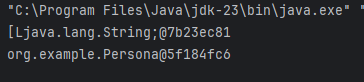
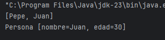
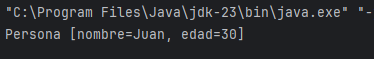

En Java, la clase Object (que es la madre de todas las clases) proporciona un método llamado toString(). Este método devuelve una representación en forma de cadena de texto (String) del objeto, de forma que podemos imprimir el nombre de la clase y el valor hash del objeto, lo cual no es muy útil para los usuarios del programa. Es lo mismo que nos pasaba cuando intentábamos imprimir arrays:
public class Main {
public static void main(String[] args) {
String nombres[] = {"Pepe", "Juan"};
System.out.println(nombres);
Persona persona = new Persona("Juan", 30);
System.out.println(persona);
}
}
Es decir, al imprimir el objeto persona, Java llama automáticamente al método toString(). Como se puede ver, esta salida no es útil para describir los datos del objeto. Por esta razón, es importante sobrescribirlo para proporcionar una representación más significativa de nuestros objetos. Por ejemplo:

Re-implementación del Método toString()
Imaginemos que tenemos una clase Persona y queremos sobrescribir el método toString() para mostrar de forma legible los detalles relevantes de una persona. La forma de hacerlo es la siguiente:
class Persona {
String nombre;
int edad;
Persona(String nombre, int edad) {
this.nombre = nombre;
this.edad = edad;
}
@Override
public String toString() {
return "Persona [nombre=" + nombre + ", edad=" + edad + "]";
}
}¿Qué es ese @Override?
En este caso, @Override es una anotación de Java que se escribe encima del método a sobrescribir (toString()), e indica que un método en una subclase (Persona) está sobrescribiendo (o redefiniendo) un método de su clase madre (Object). Lo veremos más en profundidad cuando hablemos de Herencia en el próximo tema.
Si ejecutamos ahora el main anterior, obtendríamos la siguiente salida que ya es legible y proporciona información útil sobre el objeto:
public class Main {
public static void main(String[] args) {
Persona persona = new Persona("Juan", 30);
System.out.println(persona);
}
}